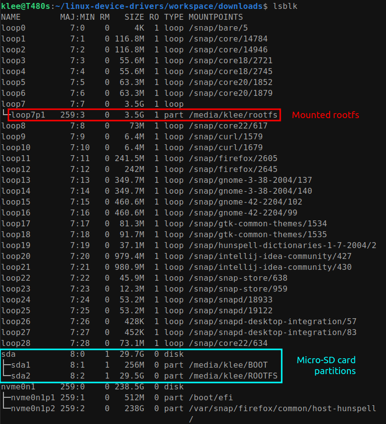
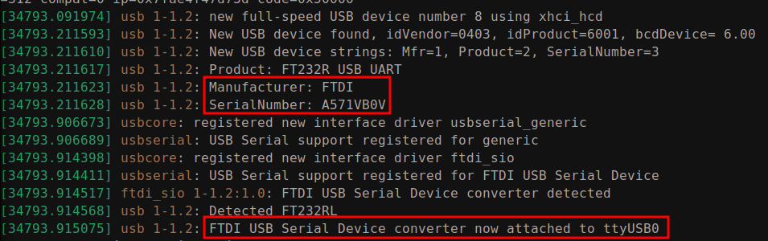

Home | Projects | Notes > Linux Device Drivers > Booting from
Booting from
Introduction
Boot Sequence of BeagleBone Black Board
The boot sequence is determined by the
SYSBOOT[4:0]bit field of the control register. This bit field value changes depending on whether the boot button is pressed on power-up or not.AM335x boot sequence
[Default] Boot button NOT pressed on power-up:
MMC1 (eMMC)
MMC0 (
UART0
USB0
Boot button pressed on power-up:
SPI0
MMC0 (
USB0
UART0
Usage of Power Button, Reset Button and Boot Button
Power button
By pressing and holding this button for 10 to 20 seconds, you can power down the board. Once you power down the board, gently pressing this button one time will power up the board again. Instead of connecting and disconnecting the power source to your board, you can use this button to power down and power up.
Reset button
Pressing this button resets the board. Note that the boot sequence is not affected by the reset action.
Boot button
This button can be used to change the boot sequence during the power up of the board.
8+ GB
Connect the
Use
dmesgorlsblkcommand to check if your system recognizes the device (e.g., sda)
Launch the GParted application
Create 2 partitions (FAT16 and EXT4)
Partition 1 - BOOT / FAT16 / Stores boot images (e.g., MLO, U-boot, kernel image) / 512MB
Partition 2 - ROOTFS / EXT4 / Stores Debian root filesystem / Rest of the
[!] Note: Make sure to click "Apply" button (green check) after creating partitions.
Configure the flags of BOOT partition;
lba,boot
Once you close GParted app, you'll see the newly created partitions appear on your system.
Copy boot images on FAT16 partition (BOOT partition)
xxxxxxxxxx11sudo cp -a workspace/downloads/pre-built-images/SD-boot/* /media/klee/BOOT/am335x-boneblack.dtb- Device tree binary of BBBMLO- Primary boot loader (Memory LOader)u-boot- U-boot bootloader imageuEnv.txt- U-boot commands and environment settingsuImage- Kernel imagexxxxxxxxxx11syncTo flush left-over contents in the buffer to the media
Copy Debian root filesystem on EXT4 partition (ROOTFS partition)
Decompress the downloaded Debian image:
xxxxxxxxxx11unxz bone-debian-9.9-iot-armhf-2019-08-03-4gb.img.xzRight-click the
.imgfileCheck the mount status by running:
xxxxxxxxxx11lsblk
Copy the contents of mounted
rootfs/into/media/klee/ROOTFS.xxxxxxxxxx11sudo cp -a /media/klee/rootfs/* /media/klee/ROOTFSxxxxxxxxxx11syncTo flush left-over contents in the buffer to the media
Unmount and remove the
Power down the board, insert the
Boot from
Booting from
Make sure that BBB board is NOT powered up
Connect BBB board and host using serial debug cable
Check if connection has been successfully established by running
dmesg.
This means that the host will serial communicate with the target board over the device file
ttyUSB0.Run minicom:
xxxxxxxxxx11(sudo) minicomRun
minicom -sto configure the environment such as selecting the serial device (e.g.,/dev/ttyUSB0).ctrl + a,xto exit.
Insert the SD card to BBB board
Power up the board using mini USB cable
Press and hold the boot button (S2)
Press and hold the power button (S3) until the blue LED turns off and turns back on. (If the blue LED doesn't turn back on, gently press the power button.)
Release the S2 button after 2 to 5 seconds.
Check if the board is successfully booting from
Pro Tip!
It would be great if we could force the board to boot from the
When BBB is pre-installed with older Debian eMMC image
As a root:
sudo -sCreate a temporary mount point:
xxxxxxxxxx11mkdir /media/tmp1Mount the partition 1 of the Debian image to the mount point created in the previous step:
xxxxxxxxxx11mount /dev/mmcblk1p1 /media/tmp1/BOOT partition (partition 1)
cdto the mount point and alter the name ofMLOfile to something else (e.g.,MLO.bak):xxxxxxxxxx11cd /media/tmp1/xxxxxxxxxx11mv MLO MLO.bakMLOcan be restored easily by changing the name back.This will prevent the board from finding the
MLOfile during its boot process, and in turn cause boot from eMMC failure.Reboot and see if the board boot from
When BBB is pre-installed with newer Debian eMMC image (You may not see
/dev/mmcblk1p2partition andMLOfile. You'll seemmcblk1p1only!)
As a root:
sudo -s, we'll take a snapshot ofMBRand zero out it to cause boot failure.Take a snapshot of
MBR:xxxxxxxxxx11dd if=/dev/mmcblk1 of=emmcboot.img bs=1M count=1if/of- Input/output filebs- Block sizeZero-out
MBR:xxxxxxxxxx11dd if=/dev/zero of=/dev/mmcblk1 bs=1M count=1Reboot and see if the board boot from
[!] Note: To restore the
MBR:xxxxxxxxxx11dd if=emmcboot.img of=/dev/mmcblk1 bs=1M count=1